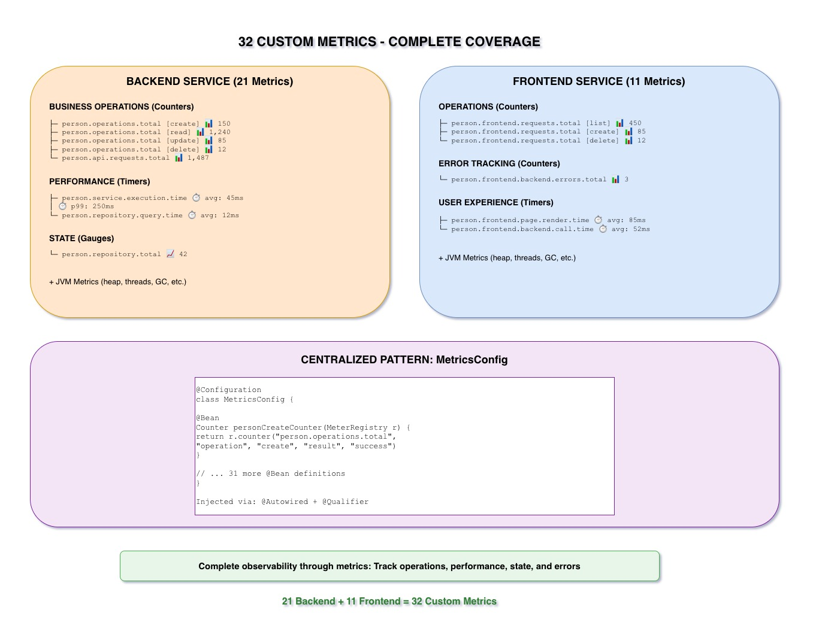

Real Metrics from Our Microservices
32 custom metrics tracking everything from CRUD operations to page render times.

32 Custom Metrics
Our implementation includes 32 custom metrics across both services:
- Backend Service: 21 metric beans
- Frontend Service: 11 metric beans
These metrics provide complete visibility into business operations, not just infrastructure.
Backend Service: 21 Metrics
person.operations.total{operation="create", result="success"}person.operations.total{operation="create", result="error"}person.operations.total{operation="read", result="success"}person.operations.total{operation="update", result="success"}person.operations.total{operation="update", result="error"}person.operations.total{operation="delete", result="success"}person.operations.total{operation="delete", result="error"}
7 metrics tracking every CRUD operation with success/error split
person.service.execution.time{method="create"}person.service.execution.time{method="findById"}person.service.execution.time{method="findAll"}person.service.execution.time{method="update"}person.service.execution.time{method="delete"}
5 metrics measuring performance of service methods
person.repository.total(Gauge - current count)person.api.requests.total{endpoint="/people", method="GET"}person.api.requests.total{endpoint="/people", method="POST"}person.api.requests.total{endpoint="/people/{id}", method="GET"}person.api.requests.total{endpoint="/people/{id}", method="PUT"}person.api.requests.total{endpoint="/people/{id}", method="DELETE"}- ...and 3 more validation/error metrics
9 metrics for database and API tracking
Frontend Service: 11 Metrics
person.frontend.requests.total{operation="list", result="success"}person.frontend.requests.total{operation="view", result="success"}person.frontend.requests.total{operation="create", result="success"}person.frontend.requests.total{operation="create", result="error"}person.frontend.requests.total{operation="update", result="success"}person.frontend.requests.total{operation="delete", result="success"}
6 metrics tracking user interactions
person.frontend.backend.errors.total{type="connection"}person.frontend.backend.errors.total{type="timeout"}person.frontend.backend.errors.total{type="server_error"}
3 metrics tracking backend communication failures
person.frontend.page.render.time{page="list"}person.frontend.page.render.time{page="form"}
2 metrics measuring UI performance
The MetricsConfig Pattern
All metrics are defined as @Bean methods in a centralized MetricsConfig class.
This pattern provides several benefits:
- Centralized: All metrics in one place
- Reusable: Inject via
@Autowired+@Qualifier - Testable: Easy to mock in unit tests
- Type-Safe: Compile-time validation
- Documented: Bean names serve as documentation
@Configuration
class MetricsConfig {
@Bean
Counter personCreateCounter(MeterRegistry registry) {
return registry.counter("person.operations.total",
"operation", "create", "result", "success")
}
}@Service
class PersonService {
@Autowired
@Qualifier("personCreateCounter")
Counter personCreateCounter
def create(Person person) {
// ... business logic ...
personCreateCounter.increment()
return person
}
}Why Track Business Metrics?
Infrastructure metrics (CPU, memory) tell you about resources. Business metrics tell you about actual user behavior and business outcomes.
"How many people are we creating per minute?" is more actionable than "CPU is at 60%". Business metrics guide product decisions.
"Create operation error rate spiked" is more specific than "Error logs increased". Pinpoint exactly which operation failed.
Track growth over time. Are we handling more creates today than yesterday? Last week? Last month? Business metrics show trends.
Key Takeaways
- 32 custom metrics provide complete coverage (21 backend + 11 frontend)
- Centralized MetricsConfig pattern for easy management
- Track business operations, not just infrastructure
- Metrics injected via Spring dependency injection with @Qualifier
- Every CRUD operation, service method, and API endpoint tracked